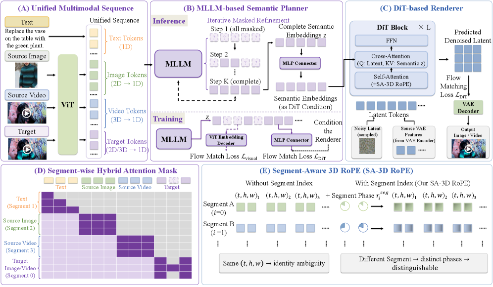
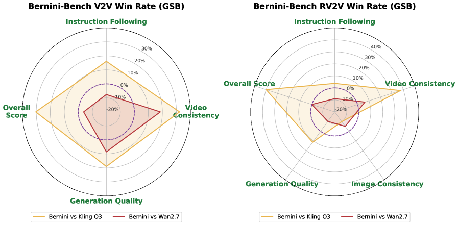

Why it matters왜 중요한가
Text is a lossy interface between understanding and rendering — so stop translating the plan into words.
텍스트는 이해와 렌더링 사이의 손실 인터페이스다 — 계획을 굳이 말로 번역하지 마라.
MLLMs are excellent at reasoning over multimodal inputs; diffusion models are excellent at photorealistic synthesis. Most "unified" systems couple them through a text prompt (rewriting) or fuse everything into one giant model that must learn both skills at once. Bernini's bet is that the right interface is the MLLM's native visual latent space: the planner reads text + source images/videos serialized into one sequence and directly outputs the semantic embeddings of the target video. The renderer never re-interprets language — it just executes the plan. This mirrors the latent-communication idea from multi-agent LLMs (skip decode-and-re-encode between heterogeneous models), applied to an understanding→generation pipeline.
MLLM은 멀티모달 입력 추론에, 디퓨전 모델은 사실적 합성에 뛰어나다. 대부분의 "통합" 시스템은 둘을 텍스트 프롬프트(재작성)로 잇거나, 두 능력을 동시에 배워야 하는 하나의 거대 모델로 합친다. Bernini의 베팅은 올바른 인터페이스가 MLLM의 고유 시각 잠재 공간이라는 것: 플래너는 텍스트 + 소스 이미지/비디오를 하나의 시퀀스로 직렬화해 읽고, 목표 비디오의 의미 임베딩을 직접 출력한다. 렌더러는 언어를 재해석하지 않는다 — 계획을 실행할 뿐. 이는 멀티에이전트 LLM의 잠재 통신 아이디어(이질 모델 간 디코딩·재인코딩 생략)를 이해→생성 파이프라인에 적용한 꼴이다.

By the numbers핵심 숫자
(next best 3.18)OpenVE-Bench 종합
(차점 3.18)
vs Wan2.7 3.30 · Kling 3.05Bernini-V2V 종합
vs Wan2.7 3.30 · Kling 3.05
84.79 retained after unifyingVBench T2V — 통합 후에도
기반 Wan2.2의 84.79 유지
+ Wan2.2 DiT rendererQwen2.5-VL 플래너
+ Wan2.2 DiT 렌더러
in new Bernini-Bench신규 Bernini-Bench의
편집 과제 / 테스트 케이스
(base Wan2.2: 69.72)VBench 동적 정도
(기반 Wan2.2: 69.72)
In one diagram한 장의 그림
Idea: two mechanisms make the latent handoff work아이디어: 잠재 핸드오프를 가능케 하는 두 장치
Mask-based semantic planning
Target visual tokens are dense ViT embeddings (no discrete tokenizer loss). Training masks a Beta-sampled subset and the MLLM infers them from context; an MAR-style ViT embedding decoder (MLP + ResNet head) recovers ground-truth embeddings with a flow-matching loss. Inference starts fully masked and decodes over K steps with a cosine mask schedule — bidirectional, unlike left-to-right AR. A latent chain-of-thought lets the planner reason before emitting the plan.
타깃 시각 토큰은 조밀한 ViT 임베딩(이산 토크나이저 손실 없음). 학습 시 Beta 분포로 뽑은 부분집합을 마스크하고 MLLM이 맥락으로 추론하며, MAR 스타일 ViT 임베딩 디코더(MLP+ResNet 헤드)가 flow-matching 손실로 원 임베딩을 복원한다. 추론은 전부 마스크에서 시작해 코사인 스케줄로 K단계 디코딩 — 좌→우 AR과 달리 양방향. 잠재 chain-of-thought로 플래너가 계획 전에 추론한다.
SA-3D RoPE + grounded conditioning
With references, source video, and target in one sequence, tokens can share the same (t,h,w) — identity ambiguity. SA-3D RoPE multiplies in a per-segment rotary phase so attention can tell segments apart (ablation: additive segment embeddings still leak reference details; phase modulation doesn't). The renderer takes the plan z through a zero-init MLP concatenated with T5 text features — preserving Wan2.2's pretrained prior — plus source VAE features for pixel-level consistency.
레퍼런스·소스 비디오·타깃이 한 시퀀스에 있으면 토큰이 같은 (t,h,w)를 공유할 수 있다 — 정체성 모호. SA-3D RoPE는 세그먼트별 회전 위상을 곱해 어텐션이 세그먼트를 구분하게 한다(ablation: 가산형 세그먼트 임베딩은 여전히 레퍼런스 디테일이 새지만, 위상 변조는 안 샌다). 렌더러는 계획 z를 zero-init MLP로 받아 T5 텍스트 특징과 연결 — Wan2.2의 사전학습 prior 보존 — 하고 소스 VAE 특징으로 픽셀 수준 일관성을 더한다.
How it works어떻게 작동하나
- Serialize everything into one sequence모든 것을 한 시퀀스로 직렬화Text, N source images/videos (as ViT embeddings), and the masked target are concatenated — one formulation covers T2V, subject-to-video, and image/video editing.텍스트, N개 소스 이미지/비디오(ViT 임베딩), 마스크된 타깃을 이어붙인다 — 하나의 공식으로 T2V·subject-to-video·이미지/비디오 편집을 모두 포괄.
- Plan: iterative masked refinement계획: 반복 마스크 정제From fully-masked target tokens, the MLLM progressively fills in semantic embeddings over K steps (cosine schedule), feeding predictions back as partial observations.전부 마스크된 타깃 토큰에서 MLLM이 K단계(코사인 스케줄)에 걸쳐 의미 임베딩을 점진적으로 채우고, 예측을 부분 관측으로 되먹인다.
- Render: flow matching on VAE latents렌더링: VAE 잠재의 flow matchingThe DiT cross-attends to the plan z (+T5 features; + source VAE features for editing) and denoises the target latent; SA-3D RoPE keeps segments distinct.DiT가 계획 z(+T5 특징; 편집 시 +소스 VAE 특징)에 cross-attention하며 타깃 잠재를 denoise; SA-3D RoPE가 세그먼트를 구분 유지.
- Train separately, co-train lightly따로 학습, 가볍게 공동 학습One weighted loss — NTP (keeps understanding) + flow matching in ViT space (planner) + flow matching in VAE space (renderer) — with each half mostly trained on its own.가중 합 손실 하나 — NTP(이해 보존) + ViT 공간 flow matching(플래너) + VAE 공간 flow matching(렌더러) — 각 반쪽은 대부분 독립 학습.
Results — editing is where the plan pays off결과 — 계획의 이득은 편집에서 터진다
| Method | Overall | Instr. Follow | Video Consist. | Gen. Quality |
|---|---|---|---|---|
| UniVideo | 2.44 | 2.58 | 3.30 | 3.16 |
| Kling O3 | 3.05 | 3.25 | 3.09 | 3.44 |
| Wan2.7 | 3.30 | 3.57 | 3.11 | 3.56 |
| Bernini | 3.49 | 3.66 | 3.51 | 3.49 |
On OpenVE-Bench (judged by Gemini 2.5 Pro) the margin is larger: overall 4.04 vs the next-best VINO's 3.18, with camera edits at 4.67 vs 2.81. On VBench T2V, Bernini scores 84.64 — essentially the base Wan2.2-A14B's 84.79 — showing the unification didn't tax raw generation.
OpenVE-Bench(Gemini 2.5 Pro 평가)에선 격차가 더 크다: 종합 4.04 vs 차점 VINO 3.18, 카메라 편집은 4.67 vs 2.81. VBench T2V에선 84.64로 기반 Wan2.2-A14B의 84.79와 사실상 동일 — 통합이 순수 생성력을 깎지 않았음을 보인다.

What to take away그래서, 가져갈 것
Semantics as the interface. The plan crosses from a 7B MLLM to a 14B-class DiT as dense ViT-space embeddings — a heterogeneous latent handoff, cousin to KV-cache communication in multi-agent LLMs.
의미가 인터페이스. 계획이 7B MLLM에서 14B급 DiT로 조밀한 ViT 공간 임베딩으로 건너간다 — 멀티에이전트 LLM의 KV-cache 통신과 사촌인 이질 잠재 핸드오프.
Decoupling preserves pretraining. Separate training + zero-init connector + T5-feature retention means neither model's pretrained strength gets overwritten — and VBench confirms T2V didn't regress.
분리가 사전학습을 지킨다. 독립 학습 + zero-init 커넥터 + T5 특징 유지로 어느 모델의 사전학습 강점도 덮어써지지 않는다 — VBench가 T2V 무손상을 확인.
Consistency is the dividend. The clearest, most repeated win is video consistency — plan-then-render changes what the instruction asks and nothing else.
배당금은 일관성. 가장 뚜렷하고 반복되는 승리는 비디오 일관성 — 계획-후-렌더링은 지시가 요구한 것만 바꾸고 나머지는 두지 않는다.
Positional identity is a real problem. SA-3D RoPE's multiplicative segment phase beats additive segment embeddings for keeping multiple visual inputs apart — a reusable trick for any multi-segment DiT.
위치 정체성은 실재하는 문제. SA-3D RoPE의 곱셈형 세그먼트 위상이 가산형 세그먼트 임베딩보다 여러 시각 입력을 잘 분리한다 — 모든 멀티 세그먼트 DiT에 재사용 가능한 기법.